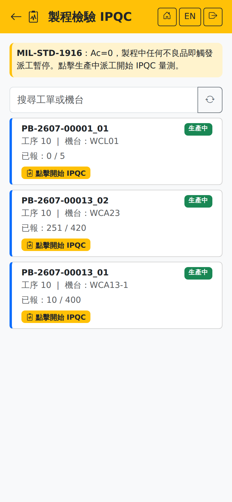

製程檢驗 IPQCIn-Process QC (IPQC)
路徑：/mobile/mfg/ipqc.html | 生產過程中的抽樣檢驗Path: /mobile/mfg/ipqc.html | Sampling inspection while production is running
列出生產中的派工，供品管於製程中抽驗。採 MIL-STD-1916 Ac=0：製程中發現任何不良品即觸發派工暫停。Lists the dispatches in progress for QC to sample during the process. It uses MIL-STD-1916 with Ac=0: any defect found puts the dispatch on hold.

製程檢驗畫面（上方橫幅說明 Ac=0 規則）In-process QC screen (the banner explains the Ac=0 rule)
操作步驟Steps
1
用查詢列輸入工單或機台找到要抽驗的派工（選填）。Find the dispatch to inspect by typing a work order or machine in the search bar (optional).
2
點「點擊開始 IPQC」進入量測頁。Tap "Start IPQC" to open the measurement screen.
3
選「驗證等級」，畫面即依批量算出「應抽 n」、「允收 Ac」與「拒收 Re」。Choose the "VL" and the screen works out "Sample n", "Accept Ac" and "Reject Re" from the lot size.
4
在「量測項目」逐項填入量測值（畫面會顯示規格上下限）；沒有列出的項目可點「自訂項目」自行新增。Enter each measured value under "Measurement Items" (the specification limits are shown); anything not listed can be added with "Add Item".
5
在「Ac=0 整批計數」填「實際抽取數」與「整批不良數」，畫面下方即時顯示判定結果。Under "Ac=0 Batch Count" fill in the "Actual Sample" and the "NG Qty"; the verdict updates immediately below.
6
填寫備註（不良描述、改善措施）後點「送出 IPQC 結果」。Add remarks (what the defect was, what was done about it) and tap "Submit IPQC".
實際抽取數必須大於 0，否則送出時會提示「抽樣數量必須大於 0」。畫面會標示建議的抽樣數（≥ 應抽 n）。The actual sample quantity has to be greater than zero or submitting warns that it must be. The screen shows the recommended sample size (at least n).
判定結果The verdict
| 結果Result | 後續What happens next |
|---|---|
| 合格Pass | 派工維持生產中，繼續生產。提示訊息為「IPQC 合格，繼續生產」。The dispatch stays in progress and production continues. The message reads that IPQC passed. |
| 不合格Fail | 整批拒批，派工自動轉為「暫停」，畫面會提示聯繫品管。暫停後現場無法再報工，須由品管處理後才能恢復。The whole lot is rejected, the dispatch is put on hold automatically and the screen tells you to notify QC. While on hold the floor cannot report, and QC has to clear it first. |
Ac=0 的意思是「允收數為零」——只要抽到一個不良品就是整批拒批，沒有「比例在多少以內可接受」這回事。Ac=0 means the acceptance number is zero: one defect in the sample rejects the whole lot. There is no acceptable percentage.
SmartFactory MES 系統使用手冊 | 如需協助請聯繫系統管理者SmartFactory MES User Manual | Contact your system administrator if you need help